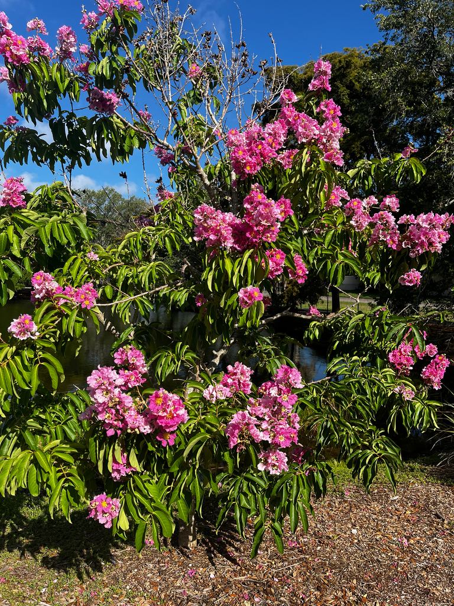

- Its leaves contain corosolic acid, a compound shown in clinical studies to lower blood sugar — making leaf tea a traditional diabetes treatment across the Philippines and India, where it's known as the Banabá plant.
- The wood is ranked second only to teak in parts of Asia and has built homes and boats for centuries.
- Each flower runs a quiet con on its pollinators — producing generous dummy pollen purely as a bee food reward while hiding the real fertile pollen nearby.
- The state of Maharashtra in India claims this as their official state flower.
Native to tropical South Asia, Southeast Asia, and Melanesia — including India, the Philippines, Malaysia, and northern Australia.
- The Giant Crepe Myrtle is one of the most medicinally significant trees in Asian traditional medicine — its leaves contain corosolic acid, a compound shown in clinical trials to lower blood sugar levels in Type II diabetics, making leaf tea a traditional treatment used across the Philippines and India.
- The wood is extraordinarily strong, ranked second only to teak in parts of Asia, and has been used for centuries to build homes, boats, and railroad ties. Despite reaching 60 feet in its homeland, this fast grower blooms even as a young tree — you don't have to wait decades for the show.
- Its bark peels in attractive gray and tan patches like a sycamore, making it a living sculpture in every season.
- Here's the botanical con hidden inside every flower: each bloom produces two completely different types of pollen simultaneously — a generous offering of nutritious yellow dummy pollen that exists purely to reward visiting bees, and a small hidden batch of fertile blue-green pollen that actually does the reproductive work.
- The tree feeds the bees lavishly while quietly getting its real pollination done on the side.
- The state of Maharashtra in India recognizes it as their official state flower. One of its close relatives, the common Crepe Myrtle (Lagerstroemia indica), is one of the most planted street trees in the American South — but this giant version dwarfs it in every way.
- In Theravada Buddhism, this tree is associated with enlightenment — the eleventh and twelfth Buddhas are said to have achieved Bodhi beneath it. In Hindu tradition, the flowers are associated with Lord Brahma, and their blossoming is considered a sign of prosperity for the household.
- The tree is known by dozens of names across its range, reflecting centuries of cultural significance across South and Southeast Asia.
The large flower panicles are a documented pollen source for bees through the hot summer months, when few other sources are available in Florida landscapes.
A University of Florida study documented honeybees, bumblebees, and native carpenter bees foraging on this species — the dimorphic pollen (two types simultaneously) may explain why it attracts such a diverse range of bee sizes.
Birds use the broad canopy for nesting, and persistent woody seed capsules provide food for seed-eating birds through winter.
By seed and cuttings. Seeds are small and winged, dispersed by wind from dry woody capsules.
Spectacular erect panicles 20 to 40 cm long bearing large 2 to 3 inch wide blooms in pink to lavender with crinkled crepe-paper petals, appearing spring through summer and often into fall — a dominant flowering event that can cover the entire canopy.
Dry, hard brown oval capsules 1 to 2 inches long that persist on the tree into winter, splitting to release small winged seeds.
Large, dark green, oblong and leathery, up to 12 inches long. One of the few deciduous trees in South Florida — leaves turn attractively red or orange before dropping in winter.
Smooth, mottled gray and tan, peeling in patches — ornamental year-round, similar in character to a sycamore.
The flaking patchwork bark is distinctive in every season. Watch for the dramatic summer flower panicles covering the canopy in pink to lavender, and the equally striking red fall leaf color before the leaves drop — one of the few deciduous color shows available in a South Florida garden.
The leaves are brewed into a medicinal tea across Southeast Asia — studied for blood-sugar effects — but this isn't a food plant here and the fruit isn't commonly eaten.
It has no known toxicity to people or pets.


- © Franky McArthur (CC-BY-NC), via iNaturalist
- © Joanne Walker (CC-BY-NC), via iNaturalist
- © Maria Escobar (CC-BY-NC), via iNaturalist
- © Denise Sosa (CC-BY-NC), via iNaturalist
- © flowerchild1969 (CC-BY-NC), via iNaturalist